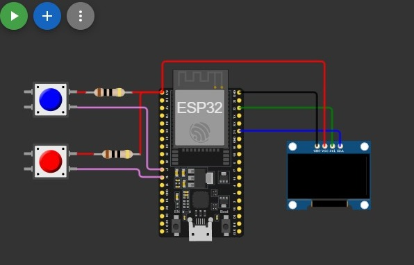
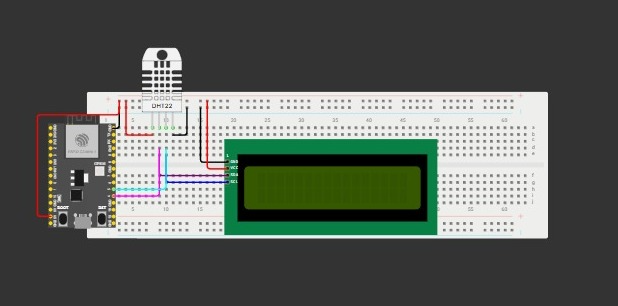
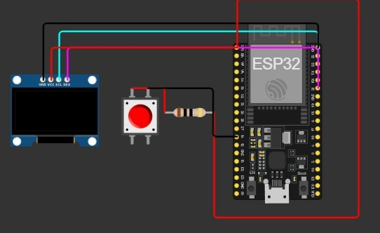

Wokwi
Wokwi es un simulador en línea que permite crear y probar circuitos electrónicos sin necesidad de tener los componentes físicos. Funciona directamente desde el navegador y es muy usado para practicar Arduino, ESP32, ESP8266, Raspberry Pi Pico y otros microcontroladores.
Juego
Este proyecto implementa un minijuego de ping-pong electrónico utilizando una placa ESP32, dos botones físicos y una pantalla OLED. El sistema permite que el jugador controle una paleta mientras compite contra un “enemigo” o paleta rival que se mueve de manera automática según la lógica programada.
ESP32
Este proyecto utiliza una placa ESP32, un sensor DHT22 y una pantalla LCD de 16x2, todos montados sobre una protoboard. El objetivo principal es crear un sistema capaz de monitorizar las condiciones ambientales y mostrar la información en tiempo real.
Flappy Bird
Este proyecto recrea una versión simplificada del clásico juego Flappy Bird usando una placa ESP32, un solo botón y una pantalla OLED montados sobre una protoboard.
